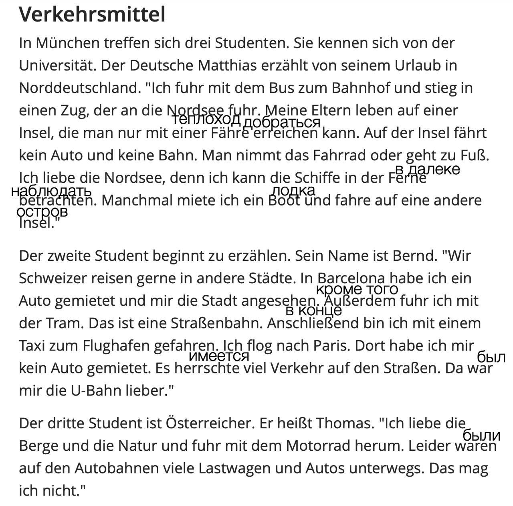
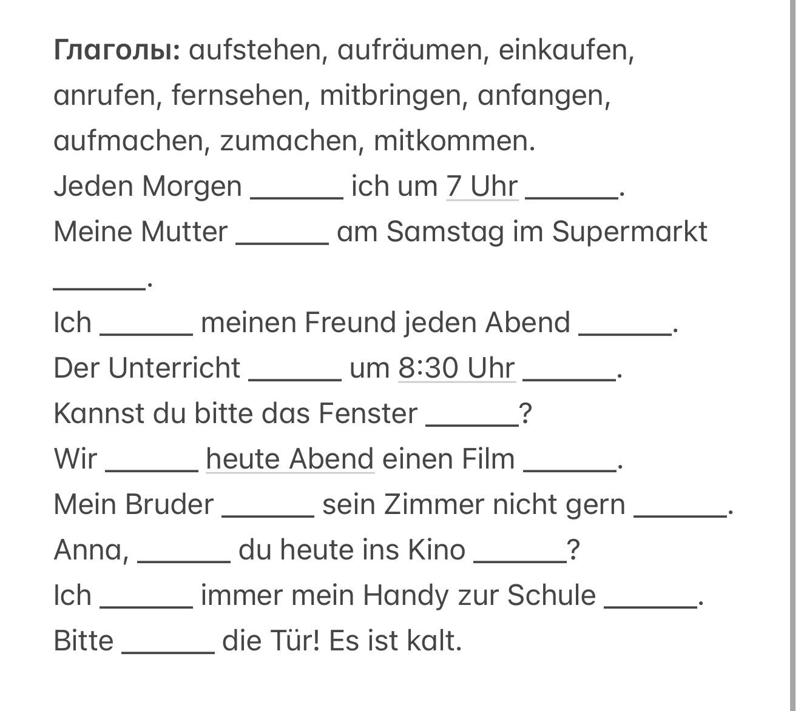
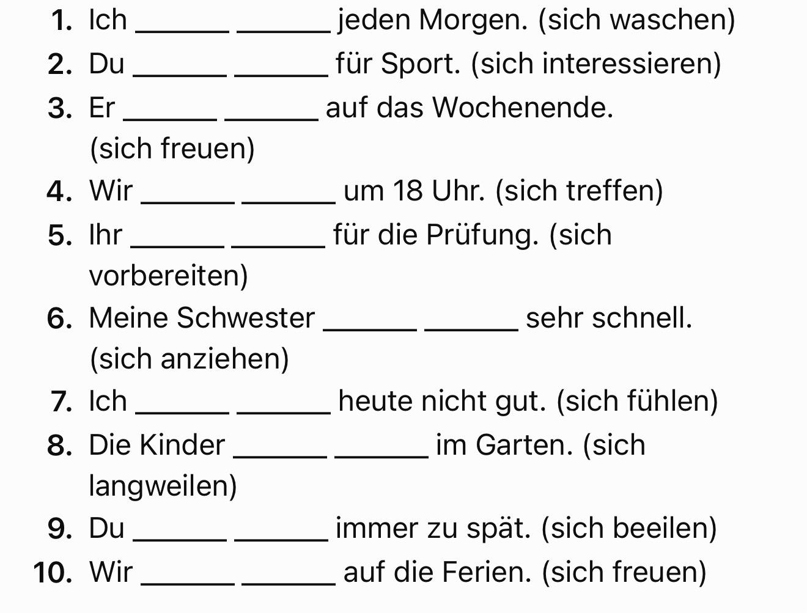
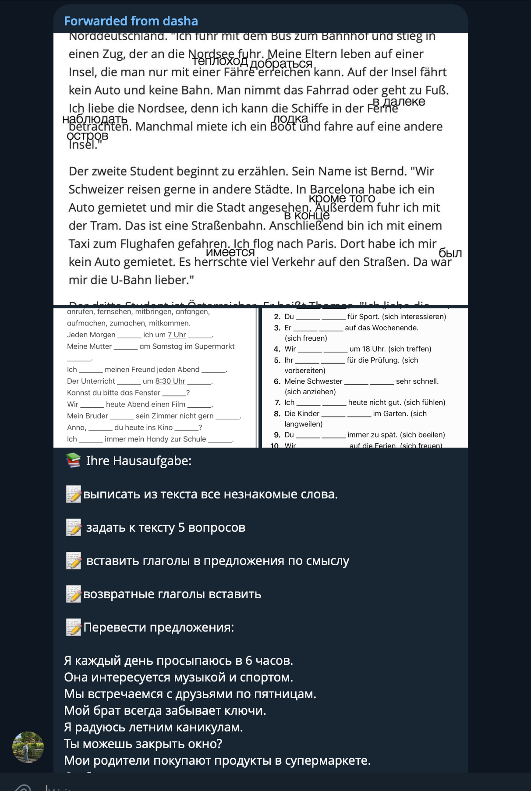
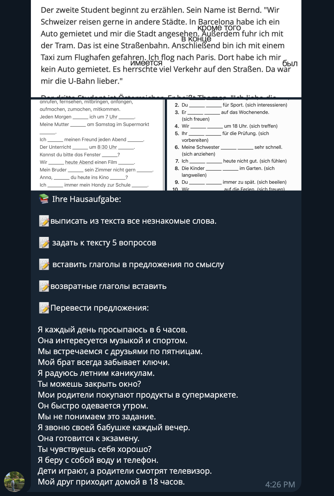

Целое занятие — тренировка выбора Akkusativ/Dativ у возвратных: erinnern mich, vorbereiten mich, Fingernägel — mir, duschen mich, Haare — sich. Новые глаголы: sich bewerben, sich erkälten, sich merken, sich leisten, Mach dir keine Sorgen! Правило дня: sich freuen über / auf / für — запомнить именно в этой последовательности (настоящее → будущее → за кого-то). В конце — текст A2 про транспорт и разговор про экзамен A2 в апреле.
Даша вернулась после болезни: «горло полоскала, тайская мазь на ночь, чай с вареньем — я почти в форме». У Полины сегодня маленький праздник — дочке 8 месяцев 🎉 Торт Полина печёт сама — каждый месяц, сегодня с лимонной начинкой. У Даши тоже торт: у сестры был день рождения, и она впервые в жизни сделала торт сама — с ягодным ганашем, «я сама была в шоке, как красиво получилось». Слова разминки:
Даша: «просто смотрим на все эти глаголы ещё раз и запоминаем, как всё строится». Правило то же: убираем «-ся», спрашиваем без него — «кого? себя» → Akkusativ, «кому? себе» → Dativ. Главная ловушка дня — erinnern и vorbereiten: хочется mir, правильно mich.
Даша шла по листу и говорила «запишите, хороший глагол». Самые важные — sich bewerben um (подавать заявление — прямо ваш будущий FSP-быт: bewerben sich um eine Stelle), sich erkälten (простужаться), sich merken (запоминать) и sich etwas leisten (позволить себе купить).
Даша: «дофига этого freuen везде — давайте один раз запишем и запомним»:
Полина: «а как это запомнить?» Даша объяснила на glauben an: сказать an was glaubst du нельзя — вместо «предлог + was» немцы говорят wo + предлог одним словом: woran, worüber, wofür, wohin. Это то же «во что? чему?», просто у немцев для этого отдельное слово.
Текст уровня A2 (чуть выше текущего — нарочно): три студента встретились в Мюнхене и рассказывают, как добираются до дома и как путешествуют. Даша: «переводить не будем — читаем, вылавливаем знакомые слова и отвечаем на вопросы, как на экзамене. Половину текста не понять — это нормально; на B2 вы тоже не будете понимать каждое слово C1-текста».
Перевод — за кнопкой (сначала попробуй понять сам). В тексте много прошедшего времени (fuhr, war, gefahren) — тема следующих уроков, просто видно, что это «было». Полина: «насмотрелись на такое — в целом уже понятно».
Из разговора с Дашей:
Как было → как надо. Звук — только правильный вариант.
Прислана в Telegram 17 ноября (текст «Verkehrsmittel» — тот самый, что читали на занятии, теперь с ним работаем дома). Поля заполняются здесь и сохраняются в браузере. Ответы и переводы — мои, не Даши.
Слова из текста, которых могло не быть в словаре, — уже собраны в карточки выше и в ЗУБРе. Сверься со своим списком: что я пропустил — допиши в поле.
Ниже — 4 вопроса, которые задавала Даша на занятии (с ответами). Твои 5 вопросов пиши в поле. Подсказка: Wo…? Womit…? Wer…? Wie…? Was…?
Первое предложение — образец из листа. Смотри на лицо (ich/du/er/wir/ihr) и на вопрос: кого? себя (Akk) или кому? себе (Dat).
Переведи сам, потом сверься. Мой вариант — не эталон Даши. Новые глаголы задания: aufwachen (просыпаться), vergessen — er vergisst (забывать), mitnehmen — ich nehme … mit (брать с собой).
Если ещё не сделано — там задание на диалог в кафе, а следующая тема как раз Freizeit und Sport. Страница 25, задание 2 — со словами из видео и моим образцом. Видео: «Was sind deine Hobbys?».

Текст (с пометками)
Отделяемые глаголы
Возвратные глаголы
Сообщение Даши
Домашка целиком💾 Всё, что ты напечатала, сохраняется автоматически в этом браузере. На другом устройстве не появится.
Все слова и фразы урока уже собраны в колоду ЗУБРа — с карточками, тестом, диктантом и расписанием повторений. Прогресс общий с остальными уроками.